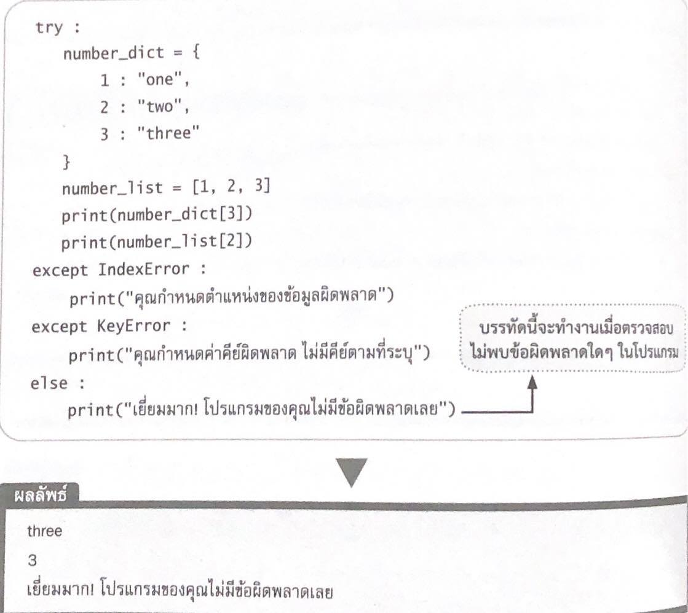
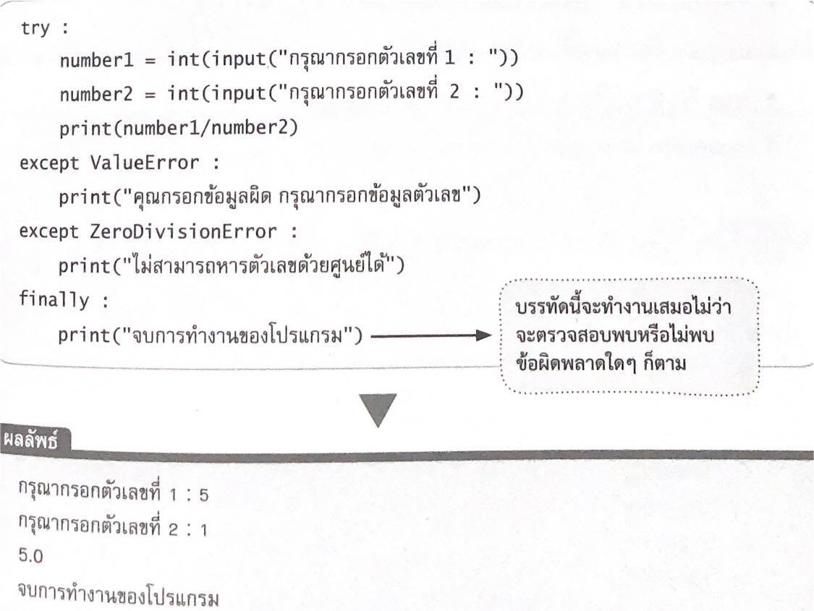

f = open("ไฟล์ที่ต้องการเปิดใช้งาน", "mode")
f คือ ไฟล์ออบเจ็คซึ่งเก็บข้อมูลของไฟล์ที่เปิดขึ้นมา
open() คือ คำสั่งที่ใช้สำหรับเปิดไฟล์ที่ต้องการ
mode คือ โหมดการทำงานของเท็กซ์ไฟล์
โหมดของไฟล์ (File mode)
เมื่อได้สร้างไฟล์ขึ้นมาจัดเก็บข้อมูล ถ้าต้องการอ่านไฟล์หรือเขียนไฟล์จากตำแหน่งที่จัดเก็บด้วยภาษาไพทอนจะมีการระบุโหมดการอ่านและเขียนออกเป็น 2 โหมด ได้แก่ โหมดไฟล์ข้อความ และ โหมดไฟล์ไบนารี
โหมดไฟล์ข้อความ (Text file mode)
ตัวอักษรสัญลักษณ์ที่ใช้จัดการกับไฟล์ข้อความ
| โหมด | ความหมาย |
|---|---|
| a | เปิดไฟล์ขึ้นมาเขียนต่อท้ายไฟล์เดิม ถ้าไม่พบไฟล์ที่ระบุจะสร้างไฟล์ใหม่ขึ้นมา |
| a+ | เปิดไฟล์ขึ้นมาอ่านและเขียนต่อท้ายไฟล์เดิม ถ้าไม่พบไฟล์ที่ระบุจะสร้างไฟล์ใหม่ขึ้นมา |
| r | เปิดไฟล์ขึ้นมาอ่านอย่างเดียว |
| r+ | เปิดไฟล์ขึ้นมาอ่านและเขียน ถ้าไม่พบไฟล์ที่ระบุจะเกิด error |
| w | เกิดไฟล์ขึ้นมาเขียนอย่างเดียว ข้อมูลเดิมที่มีอยู่ในไฟล์จะถูกเขียนทับ ถ้าไม่พบไฟล์ที่ระบุจะสร้างไฟล์ใหม่ขึ้นมา |
| w+ | เปิดไฟล์ขึ้นมาอ่านและเขียน ข้อมูลเดิมที่มีอยู่ในไฟล์จะถูกเขียนทับ ถ้าไม่พบไฟล์ที่ระบุจะสร้างไฟล์ใหม่ขึ้นมา |
โหมดไฟล์ไบนารี (Binary file mode)
ตัวอักษรสัญลักษณ์ที่ใช้จัดการกับไฟล์ไบนารี
| โหมด | ความหมาย |
|---|---|
| ab | เปิดไฟล์ไบนารีขึ้นมาเขียนต่อท้ายไฟล์เดิม ถ้าไม่พบไฟล์ที่ระบุจะสร้างไฟล์ใหม่ขึ้นมา |
| ab+ | เปิดไฟล์ไบนารีขึ้นมาอ่านและเขียนต่อท้ายไฟล์เดิม ถ้าไม่พบไฟล์ที่ระบุจะสร้างไฟล์ใหม่ขึ้นมา |
| rb | เปิดไฟล์ไบนารีขึ้นมาอ่านอย่างเดียว |
| rb+ | เปิดไฟล์ไบนารีขึ้นมาอ่านและเขียน ถ้าไม่พบไฟล์ที่ระบุจะเกิด error |
| wb | เกิดไฟล์ไบนารีขึ้นมาเขียนอย่างเดียว ข้อมูลเดิมที่มีอยู่ในไฟล์จะถูกเขียนทับ ถ้าไม่พบไฟล์ที่ระบุจะสร้างไฟล์ใหม่ขึ้นมา |
| wb+ | เปิดไฟล์ไบนารีขึ้นมาอ่านและเขียน ข้อมูลเดิมที่มีอยู่ในไฟล์จะถูกเขียนทับ ถ้าไม่พบไฟล์ที่ระบุจะสร้างไฟล์ใหม่ขึ้นมา |
เมธอดและฟังก์ชันสำหรับจัดการไฟล์
| เมธอด | ความหมาย | รูปแบบการใช้งาน |
|---|---|---|
| close() | ใช้สำหรับปิดไฟล์เพื่อบันทึกข้อมูล | file_name.close |
| seek() | ใช้สำหรับระบุตำแหน่งเริ่มต้นการอ่านข้อความ | file_name.seek(offset[, whencel]) |
| next() | ใช้สำหรับการอ่านข้อมูลจากไฟล์ทีละบรรทัดในรูปแบบของการทำซ้ำ | next(iterator[, default]) |
| read() | ใช้สำหรับการอ่านไฟล์ตามขนาดข้อมูลที่ระบุ | file_name.read(size) |
| readline() | ใช้สำหรับอ่านข้อความจากไฟล์ทีละบรรทัด | file_name.readline([size]) |
| readlines() | ใช้สำหรับอ่านข้อความทุกบรรทัดในไฟล์ ผลลัพธ์ที่ได้เป็นชนิดข้อมูลลิสต์ | file_name.readlines([sizehint]) |
| write() | ใช้สำหรับเขียนข้อความลงไฟล์ แต่ต้องใช้งานร่วมกับเมธอด close() | file_name.write(str) |
| writelines() | ใช้สำหรับเขียนข้อความแบบลำดับ | file_name.writelines(sequence) |
| rename() | ใช้สำหรับเปลี่ยนชื่อไฟล์ที่ต้องการ | os.remove("old_name","new_name") |
| remove() | ใช้สำหรับบลไฟล์ที่ต้องการ | os.remove("file_name") |
รูปแบบคำสั่งที่ใช้ในการเปิดไฟล์แบบเท็กซ์ไฟล์
TRY-EXCEPT-ELSE
TRY-EXCEPT-FINALLY
« previous Home Next »